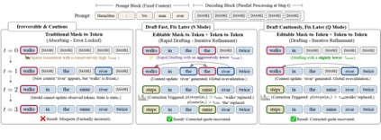
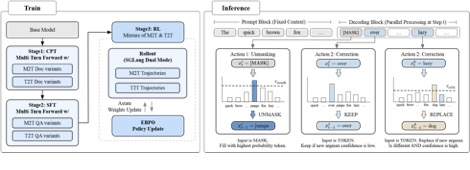
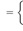
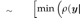
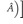
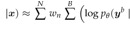
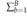

LLaDA2.1: Speeding Up Text Diffusion via Token Editing
Tiwei Bie1, Maosong Cao1, Xiang Cao1, Bingsen Chen1, Fuyuan Chen1, Kun Chen1, Lun Du1,
Daozhuo Feng1, Haibo Feng1,4, Mingliang Gong1, Zhuocheng Gong1, Yanmei Gu1, Jian Guan1, Kaiyuan Guan1, Hongliang He1,3, Zenan Huang1, Juyong Jiang1, Zhonghui Jiang1, Zhenzhong Lan1,3,†,
Chengxi Li1, Jianguo Li1,†, Zehuan Li1, Huabin Liu1, Lin Liu1, Guoshan Lu1, Yuan Lu1, Yuxin Ma1, Xingyu Mou1, Zhenxuan Pan1, Kaida Qiu1, Yuji Ren1, Jianfeng Tan1, Yiding Tian1, Zian Wang1,
Lanning Wei1, Tao Wu1, Yipeng Xing1, Wentao Ye1,2, Liangyu Zha1, Tianze Zhang1, Xiaolu Zhang1, Junbo Zhao1,2,†, Da Zheng1,†, Hao Zhong1,2, Wanli Zhong1,4, Jun Zhou1, Junlin Zhou1, Liwang Zhu1, Muzhi Zhu1,2, Yihong Zhuang1
1Ant Group, 2Zhejiang University, 3Westlake University, 4Southern University of Science and Technology
Abstract
 While LLaDA2.0 showcased the scaling potential of 100B-level
block-diffusion models and their inherent parallelization, the delicate
equilibrium between decoding speed and generation quality has remained an
elusive frontier. Today, we unveil LLaDA2.1, a paradigm shift designed
to transcend this trade-off. By seamlessly weaving Token-to-Token (T2T) editing
into the conventional Mask-to-Token (M2T) scheme, we introduce a joint,
configurable threshold-decoding scheme. This structural innovation gives rise
to two distinct personas: the SpeedyMode(SMode), which
audaciously lowers the M2T threshold to bypass traditional constraints while
relying on T2T to refine the output; and the Quality Mode (Q Mode),
which leans into conservative thresholds to secure superior benchmark
performances with manageable efficiency degrade. Furthering this evolution,
underpinned by an expansive context window, we implement the first large-scale Reinforcement
Learning (RL) framework specifically tailored for dLLMs, anchored by
specialized techniques for stable gradient estimation. This alignment not only
sharpens reasoning precision but also elevates instruction-following fidelity,
bridging the chasm between diffusion dynamics and complex human intent. We
culminate this work by releasing LLaDA2.1-Mini (16B) and LLaDA2.1-Flash
(100B). Across 33 rigorous benchmarks, LLaDA2.1 delivers strong task
performance and lightning-fast decoding speed. Despite its 100B volume, on
coding tasks it attains an astounding 892 TPS on HumanEval+, 801 TPS on
BigCodeBench, and 663 TPS on LiveCodeBench.
While LLaDA2.0 showcased the scaling potential of 100B-level
block-diffusion models and their inherent parallelization, the delicate
equilibrium between decoding speed and generation quality has remained an
elusive frontier. Today, we unveil LLaDA2.1, a paradigm shift designed
to transcend this trade-off. By seamlessly weaving Token-to-Token (T2T) editing
into the conventional Mask-to-Token (M2T) scheme, we introduce a joint,
configurable threshold-decoding scheme. This structural innovation gives rise
to two distinct personas: the SpeedyMode(SMode), which
audaciously lowers the M2T threshold to bypass traditional constraints while
relying on T2T to refine the output; and the Quality Mode (Q Mode),
which leans into conservative thresholds to secure superior benchmark
performances with manageable efficiency degrade. Furthering this evolution,
underpinned by an expansive context window, we implement the first large-scale Reinforcement
Learning (RL) framework specifically tailored for dLLMs, anchored by
specialized techniques for stable gradient estimation. This alignment not only
sharpens reasoning precision but also elevates instruction-following fidelity,
bridging the chasm between diffusion dynamics and complex human intent. We
culminate this work by releasing LLaDA2.1-Mini (16B) and LLaDA2.1-Flash
(100B). Across 33 rigorous benchmarks, LLaDA2.1 delivers strong task
performance and lightning-fast decoding speed. Despite its 100B volume, on
coding tasks it attains an astounding 892 TPS on HumanEval+, 801 TPS on
BigCodeBench, and 663 TPS on LiveCodeBench.

<latexit sha1_base64="KEA6Z8JdiSRmhVGZ2OZ5y7ylC+4=">AAACC3icbVDLSgNBEOyNrxhfUY9eFoPgKeyKRC9CwIvHiOYByRJmJ7PJkJnZZaZXCCGfkKt+iDfx6kf4Hf6Ak2QPJrGgobqqG7orTAQ36HnfTm5jc2t7J79b2Ns/ODwqHp80TJxqyuo0FrFuhcQwwRWrI0fBWolmRIaCNcPh/cxvvjBteKyecZSwQJK+4hGnBK30hHd+t1jyyt4c7jrxM1KCDLVu8afTi2kqmUIqiDFt30swGBONnAo2KXRSwxJCh6TP2pYqIpkJxvNTJ+6FVXpuFGtbCt25+ndjTKQxIxnaSUlwYFa9mfivF8rJcr8itFOMboMxV0mKTNHFJVEqXIzdWTBuj2tGUYwsIVRz+4xLB0QTija+gk3JX81knTSuyn6lXHm8LlW9LK88nME5XIIPN1CFB6hBHSj0YQqv8OZMnXfnw/lcjOacbOcUluB8/QJwN5sn</latexit
>
<
latexit sha1_base64="dyeGZ7RoqIQpPl0wcawuKsO4JOY=">AAACC3icbVDLSgNBEOz1GeMr6tHLYBA8hd0g0YsQ8OIxonlAsoTZySQZMrO7zPQKYckn5Kof4k28+hF+hz/gJNmDSSxoqK7qhu4KYikMuu63s7G5tb2zm9vL7x8cHh0XTk4bJko043UWyUi3Amq4FCGvo0DJW7HmVAWSN4PR/cxvvnBtRBQ+4zjmvqKDUPQFo2ilJ7wrdwtFt+TOQdaJl5EiZKh1Cz+dXsQSxUNkkhrT9twY/ZRqFEzySb6TGB5TNqID3rY0pIobP52fOiGXVumRfqRthUjm6t+NlCpjxiqwk4ri0Kx6M/FfL1CT5X5FaCfYv/VTEcYJ8pAtLuknkmBEZsGQntCcoRxbQpkW9hnChlRThja+vE3JW81knTTKJa9SqjxeF6tullcOzuECrsCDG6jCA9SgDgwGMIVXeHOmzrvz4XwuRjecbOcMluB8/QJx3Jso</latexit
>
>
<
latexit sha1_base64="hIkuvgLXp1qShxwd63T02b/oME4=">AAACO3icbVC7SgNBFJ31GeMramkzGAVtwq6IWknAxjKCeUA2LLOTGx2c2V1m7oph3e/wa9LqN1jbiZ3YO3kUJnpg4Mw558K9J0ykMOi6b87c/MLi0nJhpbi6tr6xWdrabpg41RzqPJaxboXMgBQR1FGghFaigalQQjO8vxz6zQfQRsTRDfYT6Ch2G4me4AytFJS85NBHeMTMICQmp0/UD1X2mAcZ5kf0gvrI0iAbR6ArMM+DUtmtuCPQv8SbkDKZoBaUvvxuzFMFEXLJjGl7boKdjGkUXEJe9FMDCeP37BbalkZMgelko9NyemCVLu3F2r4I6Uj9PZExZUxfhTapGN6ZWW8o/uuFKp/+zwjtFHvnnUxESYoQ8fEmvVRSjOmwSNoVGjjKviWMa2GPofyOacbR1l20LXmznfwljeOKd1o5vT4pV/cnfRXILtkjh8QjZ6RKrkiN1Aknz2RAXsirM3DenQ/ncxydcyYzO2QKzvcP2Qevmw==</latexit
<
latexit sha1_base64="hIkuvgLXp1qShxwd63T02b/oME4=">AAACO3icbVC7SgNBFJ31GeMramkzGAVtwq6IWknAxjKCeUA2LLOTGx2c2V1m7oph3e/wa9LqN1jbiZ3YO3kUJnpg4Mw558K9J0ykMOi6b87c/MLi0nJhpbi6tr6xWdrabpg41RzqPJaxboXMgBQR1FGghFaigalQQjO8vxz6zQfQRsTRDfYT6Ch2G4me4AytFJS85NBHeMTMICQmp0/UD1X2mAcZ5kf0gvrI0iAbR6ArMM+DUtmtuCPQv8SbkDKZoBaUvvxuzFMFEXLJjGl7boKdjGkUXEJe9FMDCeP37BbalkZMgelko9NyemCVLu3F2r4I6Uj9PZExZUxfhTapGN6ZWW8o/uuFKp/+zwjtFHvnnUxESYoQ8fEmvVRSjOmwSNoVGjjKviWMa2GPofyOacbR1l20LXmznfwljeOKd1o5vT4pV/cnfRXILtkjh8QjZ6RKrkiN1Aknz2RAXsirM3DenQ/ncxydcyYzO2QKzvcP2Qevmw==</latexit
>
>
<
latexit sha1_base64="KqkwFa7IGldZ/njWpkoK5Ry1IUM=">AAACNnicbVBNS8NAEN3Ur1q/qh69BKugICURqZ5E8OJRwarQhLDZTNulu0nYnYgl5k/4a3rVf+HFm3gV/ANuPw5afTDw5r0ZmHlhKrhGx3m1SjOzc/ML5cXK0vLK6lp1feNGJ5li0GSJSNRdSDUIHkMTOQq4SxVQGQq4DXvnQ//2HpTmSXyN/RR8STsxb3NG0UhB9SDd8xAeMNdUQvHohTJ/KIIci/1TD2kW5GMXIo5FEVRrTt0Zwf5L3AmpkQkug+qXFyUskxAjE1Trluuk6OdUIWcCioqXaUgp69EOtAyNzQ3az0dfFfauUSK7nShTMdoj9edGTqXWfRmaSUmxq6e9ofivF8ridz8ltDJsn/g5j9MMIWbjS9qZsDGxhxnaEVfAUPQNoUxx84zNulRRhibpiknJnc7kL7k5rLuNeuPqqHa2M8mrTLbINtkjLjkmZ+SCXJImYeSJDMgzebEG1pv1bn2MR0vWZGeT/IL1+Q0kKK5g</latexit
<
latexit sha1_base64="M3/FsbSsyIZKRnwNWWcLwN2YBnE=">AAACC3icbVDLTgJBEOzFF+IL9ehlIjHxRHbVoBcTEi8eMYqQwIbMDrMwYWZ3M9NrQgifwFU/xJvx6kf4Hf6AA+xBwEo6qa7qTrorSKQw6LrfTm5tfWNzK79d2Nnd2z8oHh49mzjVjNdZLGPdDKjhUkS8jgIlbyaaUxVI3ggGd1O/8cK1EXH0hMOE+4r2IhEKRtFKj3h72SmW3LI7A1klXkZKkKHWKf60uzFLFY+QSWpMy3MT9EdUo2CSjwvt1PCEsgHt8ZalEVXc+KPZqWNyZpUuCWNtK0IyU/9ujKgyZqgCO6ko9s2yNxX/9QI1XuyXhFaK4Y0/ElGSIo/Y/JIwlQRjMg2GdIXmDOXQEsq0sM8Q1qeaMrTxFWxK3nImq+T5ouxVypWHq1LVzfLKwwmcwjl4cA1VuIca1IFBDybwCm/OxHl3PpzP+WjOyXaOYQHO1y9zgZsp</latexit
>
Figure 1: Aggressive parallel drafting, backed by retroactive correction, accelerates inference.
Authors are listed in alphabetical order based on last name. † indicates tech-leaders.
1 Introduction
Discrete diffusion Large Language Models (dLLMs) have emerged as a compelling alternative to autoregressive generation, offering the potential for non-monotonic reasoning and parallel decoding. However, the standard absorbing-state framework—which enforces a rigid, monotonic transition from [MASK] to fixed tokens—faces inherent limitations in fidelity. As highlighted by Kang et al. (2025), the independent nature of parallel decoding often amplifies token-level inconsistencies. While recent studies have attempted to mitigate this via confidence-based remasking (Wang et al., 2025b) or by employing external guide models (Lee et al., 2025). To bridge the gap between efficient parallel generation and high-fidelity reasoning, we align with the direction of generalizing discrete diffusion beyond absorbing states (Rutte et al.¨ , 2025) and propose a comprehensive framework for Editable State Evolution.
Unlike prior work such as Song et al. (2025), we first design a novel Error-Correcting Editable decoding strategy, which introduces a dynamic paradigm controlled by dual probability thresholds. This paradigm encompasses two types of operations: direct decoding from mask to token, and editing from one token to another. This strategy enables the model to directly refine its own outputs during the generation process, thereby effectively addressing the local inconsistencies commonly encountered in parallel decoding. To cultivate this editing capability, our CPT and SFT phases expose the model to both masked positions and stochastic noise, incentivizing it to not only generate new content but also identify and rectify existing errors.
Crucially, this architecture transforms the rigid trade-off between latency and fidelity into a flexible, user-configurable continuum. By allowing the model to retroactively correct errors, we can aggressively lower the confidence threshold for the initial Mask-to-Token (M2T) phase without collapsing the generation quality. This insight gives rise to two distinct operating personas: a Speedy Mode (S Mode), which prioritizes high-throughput generation by accepting lower-confidence tokens and relying on subsequent Token-to-Token (T2T) passes for rectification; and a Quality Mode (Q Mode), which adheres to conservative thresholds to maximize reasoning rigor. This duality demonstrates that editability is not merely a mechanism for error repair, but a fundamental lever for accelerating parallel decoding.
To further elevate the model’s capabilities, we integrate a Reinforcement Learning (RL) stage. While recent works such as SPG (Wang et al., 2025a), TraceRL (Wang et al., 2025c) and ESPO (Ou et al., 2025) have demonstrated the potential of RL in improving dLLMs, applying policy gradients to block-autoregressive models remains challenging due to the intractability of sequence log-likelihoods. We circumvent this by adopting an ELBO-based Block-level Policy Optimization (EBPO) framework tailored for our editable setting.
Notice that LLaDA2.1 extends its previous version (LLaDA2.0) by prioritizing decoding versatility over mere parameter scaling or benchmark peaking. By keeping the model size constant and minimal change of training data, we prove that our novel editing scheme enables lightning-fast execution with minimal overhead. This work serves as a proof-of-concept for a new dLLM paradigm that balances high-quality generation with
extreme operational efficiency.
2 Configurable Decoding Scheme
During LLM decoding, Exposure Bias—where errors compound as the model conditions on its own imperfect predictions—is inevitable. This phenomenon is particularly severe in dLLMs due to their parallel generation nature. We observe that once such decoding errors occur, dLLMs tend to become increasingly conservative in subsequent steps, significantly slowing down the generation process. In contrast, autoregressive models exhibit lower exposure bias and can self-correct through extended chainof-thought reasoning. To address this challenge, we introduce an editing operation into the decoding process, enabling the model to retrospectively correct errors introduced during parallel generation, thereby achieving a much better balance between generation speed and quality.
Specifically, we extend standard discrete diffusion to support it. Unlike conventional absorbing-state models that enforce a rigid monotonic transition from [MASK] to fixed tokens, our framework introduces a dynamic
“Draft-and-Edit” paradigm controlled by dual probability thresholds. We formalize the state evolution by defining two active update sets at timestep t: the Unmasking Set Γt and the Editing Set ∆t.
We formalize the state evolution by defining two active update sets at timestep t: the Unmasking Set Γt and

>latexit sha1_base64="Wwai5pmSpwdT/cmdClLhTjgRfd4=">AAACH3icbVDLSsNAFJ34rPUVFVdugkXoqiQi1Y1QcOOygn1AG8NkOm2HTiZh5kYaQz6mW/0Qd+K23+EPOG2zsK0HLpx7zr1w7/EjzhTY9tTY2Nza3tkt7BX3Dw6Pjs2T06YKY0log4Q8lG0fK8qZoA1gwGk7khQHPqctf/Qw81uvVCoWimdIIuoGeCBYnxEMWvLM8/FLOsq8FLL7LtAxpBy/JZlnluyKPYe1TpyclFCOumf+dHshiQMqgHCsVMexI3BTLIERTrNiN1Y0wmSEB7SjqcABVW46Pz+zrrTSs/qh1CXAmqt/N1IcKJUEvp4MMAzVqjcT//X8IFvuV4RODP07N2UiioEKsrikH3MLQmsWltVjkhLgiSaYSKafscgQS0xAR1rUKTmrmayT5nXFqVaqTzelWjnPq4Au0CUqIwfdohp6RHXUQASlaILe0YcxMT6NL+N7Mbph5DtnaAnG9BdkE6Q8</latexit
<
Figure 2: Overview of training & inference framework of LLaDA2.1
the Editing Set ∆t. Let vit = arg maxv pθ(v|xt) be the top-candidate. The update indices are identified as:
Γt = ni | xti = [MASK] and pθ(vit|xt) >τmasko , (1)
∆t = ni | xti ̸= vit and pθ(vit|xt) >τedito , (2)
with τmask, τedit ∈ [0, 1] being the confidence thresholds configuring the decoding dynamics. The transition operator then applies the updates strictly on the union of these sets:
xti−1 
3 Training Paradigm
3.1 Training Alignment for “Draft-and-Edit”
To align the model with the “Draft-and-Edit” inference paradigm and mitigate the Exposure Bias inherent in standard mask-based training, we employ a unified Mixture of M2T and T2T objective. This objective is applied throughout both the Continual Pre-Training (CPT) and Supervised Finetuning (SFT) stages.
This dual-stream training objective enables the model to develop two complementary capabilities fundamental to our framework:
• Drafting Stream (Mask-to-Token): The model learns to predict the correct token at each masked position to generate initial content, establishing the foundational drafting capability.
• Editing Stream (Token-to-Token): The model learns to recover original tokens from random noise perturbations (rectifying errors), equipping it with the ability to identify and rewrite artifacts.
By consistently applying this dual-stream supervision from CPT through SFT, we ensure that LLaDA2.1 is fundamentally conditioned to function as both a fast drafter and a precise editor within a single parameter space. Additionally, we employ a Multi-turn Forward (MTF) data augmentation technique, by exposing the model to a wider variety of editing scenarios, enhance the model’s editing capabilities.
3.2 Reinforcement Learning Training
The application of policy gradient methods to diffusion models faces a fundamental hurdle: the intractability of the sequence-level log-likelihood, log πθ(x), which is essential for computing policy updates. While prior works have explored various approximations, they have historically struggled with high variance and prohibitive computational costs, limiting RL to small-scale experiments (Wang et al., 2025c; Ou et al., 2025; Wang et al., 2025a). We overcome this bottleneck by synthesizing ELBO-based Block-level Policy Optimization (EBPO) with robust infrastructure optimizations. By utilizing the Evidence Lower Bound (ELBO) as a principled proxy for exact likelihood and implementing Vectorized Likelihood Estimation (Arriola et al., 2025) to parallelize bound computation, we achieve orders-of-magnitude acceleration. This integration allows us to scale dLLMs RL to unprecedented context lengths and training magnitudes, establishing a stable and efficient pipeline for post-training.
Formally, we maximize a clipped surrogate objective, where the advantage is weighted by the probability ratio ρ:
JEBPO(θ)
= Ex,y  
where Aˆ is an estimator of the advantage function at timestep t, quantifying the relative improvement of the chosen action over the average expectation under the current policy. For a set of discretized timesteps
{tn}nN=1 and weights {wn}, we construct a composite input zn = ytn ⊕ y0 to compute all block-conditional probabilities in parallel:
log ρ(y 
n=1 b=1
Here, M denotes a Block-Causal Mask ensuring
the b-th block attends only to valid history. By aggregating block-level
contributions ( 
4 Infrastructure
4.1 Training Infrastructure
Continued Pre-Training and Supervised Fine-Tuning For both continued pre-training (CPT) and supervised fine-tuning (SFT), we adopt the same training infrastructure as LLaDA2.0 (Bie et al., 2025), leveraging dFactory (InclusionAI, 2025), which provides efficient training recipes specifically designed for dLLMs, except that we introduce a dedicated optimized implementation for the multi-turn forward (MTF) stage.
RL Training To enable effective policy optimization for dLLMs, we extend the AReaL framework (Fu et al., 2025; Mei et al., 2025) by developing specialized likelihood estimation and advantage estimation protocols that leverage diffusion sampling, explicitly supporting both T2T and M2T modes. This workflow is powered by ASystem (Ling Team et al., 2025) for distributed orchestration and utilizes a customized version of SGLang (Ant Group Team & SGLang Team) as the dedicated rollout engine.
4.2 Inference Infrastructure
We use a customized version of SGLang (Ant Group Team & SGLang Team) for inference. To further accelerate the inference speed, we integrate Alpha-MoE (Aleph-Alpha), a MoE megakernel that combines the two FusedMoE computations into one kernel, and adopt per-block FP8 quantization to balance the inference speed and model accuracy. To accelerate inference on long-context sequences, we adopt block-wise causal masked attention, allowing the KV cache for the entire long context to be computed in a single forward pass.
We further enable radix caching and batching support for block diffusion LLMs in SGLang.
4.3 Decoding Algorithm at Inference
In the inference stage, we adopt a decoding algorithm that combines Threshold Decoding (Ma et al., 2025) with an explicit editing mechanism. In the basic setting, decoding and editing are performed within a single block: tokens are generated under a threshold-based constraint, and local edits are applied to revise intermediate outputs before the block is finalized.
Beyond single-block editing, we further introduce a Multiple Block Editing (MBE) mechanism. MBE allows the model to revisit and revise previously generated blocks based on the content of newly decoded blocks.
5 Evaluation
To comprehensively evaluate the quality of instruction-tuned models, we employ a diverse suite of benchmarks categorized into five dimensions:
• Knowledge: MMLU-Pro (Wang et al., 2024), GPQA-Diamond (Rein et al., 2024), C-Eval (Huang et al., 2023), PHYBench (Qiu et al., 2025), TriviaQA (Joshi et al., 2017)
• Reasoning: SQuAD 2.0 (Rajpurkar et al., 2018), DROP (Dua et al., 2019), KOR-Bench (Ma et al.,
2024), HellaSwag (Zellers et al., 2019), BIG-Bench Hard (Suzgun et al., 2023), BIG-Bench Extra Hard
(Kazemi et al., 2025), MuSR (Sprague et al., 2023), ZebraLogic (Lin et al., 2025), PrOntoQA (Saparov
& He, 2022), PIQA (Bisk et al., 2020), OCNLI (Hu et al., 2020), BIG-Bench Hard-CN (Opencompass Team, 2023)
• Coding: CRUXEval (Gu et al., 2024), MultiPL-E (Cassano et al., 2023), BigCodeBench (Zhuo et al.,
2024), LiveCodeBench (Jain et al., 2024), Spider (Yu et al., 2018), BIRD (Li et al., 2023), HumanEval+ (Liu et al., 2023), MBPP+ (Liu et al., 2023)
• Math: OlympiadBench (He et al., 2024), AIME 2025 (AIME, 2025), Omni-MATH (Gao et al., 2024), GSM-Plus (Li et al., 2024), CMATH (Wei et al., 2023)
• Agent & Alignment: BFCL (Patil et al., 2025), IFEval (Zhou et al., 2023), Nexus Function Calling Benchmark (Nexusflow.ai Team, 2023)
We report the comparative scores and TPF (tokens per forward) of LLaDA2.1-flash and LLaDA2.1-mini against other models in Tables 1 and 2, respectively. From the results, we observe that LLaDA2.1’s scores under S Mode decrease compared to LLaDA2.0, but a substantial improvement in TPF is achieved. While under Q Mode, LLaDA2.1 surpasses the results of LLaDA2.0 on both mini and flash model.
In Table 3, we focus on showcasing the speed performance of LLaDA2.1 in S Mode. It can be observed that LLaDA2.1 exhibits significant speed variations across different domains, being highest in the code domain and lowest in instruction following. Specifically, after quantization, LLaDA2.1-flash achieves a peak TPS of 891.74 on HumanEval+, while LLaDA2.1-mini reaches 1586.93 in peak TPS, demonstrating significant speed advantages.

Figure 3: Throughput (TPS) comparison on nine benchmarks, consistent with the evaluation settings in Table 3, for LLaDA2.1 variants against LLaDA2.0, Ling, and Qwen3 across the mini (left) and flash (right) series.
As shown in Table 4, under the same S Mode setting, Multi-Block Editing (MBE) yields consistent performance improvements across benchmarks for both Flash and Mini variants, at the cost of a modest reduction in throughput. The gains are particularly evident on reasoning and coding tasks, indicating that iterative cross-block refinement effectively corrects local errors and improves global consistency without substantially compromising decoding efficiency.
Figure 3 further illustrates the throughput (in terms of token per sec) comparison of LLaDA 2.1 variants against LLaDA 2.0, Ling, and Qwen-3 across 5 different benchmark domains as shown in Table 3. This comparison spotlights LLaDA-2.1 (S Mode)’s striking speed advantage: it achieves dramatically faster inference while sacrificing only a negligible sliver of output quality.
6 Outlook and Limitation
Tradeoff Between Inference Speed and Accuracy While LLaDA2.1 significantly improves inference speed, a clear speed-accuracy tradeoff persists, particularly with noticeable performance differences across various Table 1: Benchmark Performance of LLaDA2.1-flash, comparing with several baseline models. For diffusion language model, we report its scores across each benchmark along with its TPF (tokens per forward); for AR model, we report its scores only, as its TPF is inherently equal to 1.
Qwen3-30B- Ling-flash-2.0 LLaDA2.0-flash LLaDA2.1-flash LLaDA2.1-flash
A3B-Inst-2507 (S Mode) (Q Mode)
Benchmark (Score) (Score) (Score | TPF) (Score | TPF) (Score | TPF)
Average 73.09 71.52 72.43 | 3.08 72.34 | 5.93 73.54 | 3.64
Knowledge
MMLU-ProGPQA 74.2154.14 69.1677.55 62.3174.79 | 3.292.36 66.6775.31
C-EVAL 88.1229.84 87.5427.67 85.21 || 1.902.70 86.9326.04
PHYBenchTriviaQA 65.61 30.06 | 1.94 72.55
69.76 66.88 |
Reasoning
BIG-Bench Hard 85.54 89.36 86.75 | 2.66 87.82 | 5.61 88.69 | 3.28
BIG-Bench Extra HardMuSRZebraLogic 37.8079.15 23.2482.72 27.8680.4882.30 | 4.603.21 33.5182.55 || 2.905.045.78 35.7779.8486.23 ||| 3.263.773.171.85 bbh-zhPrOntoQA 86.18 75.09 87.5296.50 | 1.70 80.10 | 5.80 88.90 | 5.73
|
90.97 87.60 | 2.742.64 84.2095.00 || 9.23 97.00 |
97.12 97.88 |
PIQA 91.5771.59 91.95 92.7671.63 | 1.431.09 72.1792.44 || 2.381.832.31 92.1772.7585.31 ||| 1.321.511.442.77
OCNLI 65.36 |
HellaSwag 86.31 81.59 84.97 | 1.263.44 62.8085.60 || 4.97 65.12 |
KOR-Bench 69.20 69.44 63.04 |
DROP 87.57 88.32 87.90 | 2.263.10 90.6587.55 || 5.405.01 87.8690.80 || 2.533.90
SQuAD 2.0 89.51 81.32 90.00 |
Coding
LiveCodeBench 46.42 52.48 42.51 | 4.23 44.05 | 6.48 45.37 | 3.80
MBPP+ 78.21 79.37 |
6.45 89.63 |
7.77 73.34 |
4.70 BIRD-SQL
47.75 47.49 45.76 | 2.16 42.18 || 5.09 44.04 || 2.95
CRUXEval-OMultiPL-EHumanEval+BigCodeBench-Full 86.7541.4970.6787.88 82.7580.8965.7687.5840.70 85.1241.5874.8788.41 ||| 3.214.023.333.14 76.7270.8937.1185.25|||10.4313.818.516.54 87.5039.2177.2589.63 ||| 3.804.339.185.96
|
Spider 81.79 80.58 82.49 | 4.42 79.18 | 8.74 81.04 | 5.70
Math
AIME 2025 61.88 55.89 60.00 | 4.57 63.33 | 5.36 63.33 | 3.46 OlympiadBenchGSM-PlusCMATH 77.5989.41 89.7176.19 74.0789.7496.90 | 3.702.68 75.8589.23 || 7.144.846.46 96.6376.5989.69 ||| 3.832.653.81
|
96.58 96.52 | 2.17 96.54 |
Omni-MATH 54.00 53.00 50.30 | 3.39 52.30 | 6.01 54.10 | 3.50